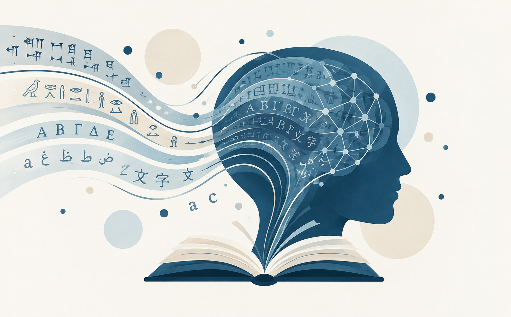

The impacts of late literacy
What happens when someone learns to read after childhood?
Can individuals who learn to read later in life reach the same level of reading proficiency as those who learned in childhood?
What makes this topic so important?
Learning to read transforms our brain. But we still know very little about the limits of this adaptation when literacy is acquired later in life.
The brain
Learning to read brings profound changes to the way the brain processes visual information, including object recognition and language.
The age of literacy acquisition
The age at which we learn to read may influence the development of reading skills.
How far can people go?
People who learn to read later in life can help us better understand the brain’s capacity to adapt.

An open question
We know that late literacy is possible. The question is whether, after learning to read, someone who started later can develop a reading proficiency that is as efficient as that of a person who learned to read in childhood.
What happens during the research?
Participation takes place individually, in person at the Universidade Federal do Ceará, and lasts approximately two hours.
01 · Reading proficiency
You will complete tasks that help us assess different aspects of reading in Brazilian Portuguese.
02 · Non-verbal reasoning
You will complete a non-verbal reasoning test.
03 · Eye-tracking
We will use an eye-tracking device to monitor your eye movements while you read. It is a camera that sits in front of you, completely non-invasive. You just have to read!
Who are we looking for?
We are looking for adults with different literacy and educational backgrounds.
After a short interview, participants who fit our criteria and finish the study will be financially compensated.
Learn more about the project
Watch a short video to learn more about our research, its goals, and why this topic matters.
For EJA institutions
The collaboration of EJA schools, centres and professionals is essential for us to reach individuals with different literacy backgrounds. If your institution can share this project, your help will have a direct impact on the research.
Identify
Help us reach current and former students who may fit the participant profile.
Share
Share information about the study with your community.
Connect
Ask interested people to contact the research team directly.
Team and funding
This is a collaboration between researchers from the University of Southampton, UK, and Universidade Federal do Ceará, Brazil.
Dr. João Vieira
Postdoctoral researcher · University of Southampton
Prof. Denis Drieghe
Supervisor and researcher · University of Southampton
Prof. Elisângela Teixeira
Researcher · Universidade Federal do Ceará
Leverhulme Trust
This project is funded by the Leverhulme Trust
Get in touch
Would you like to participate, share the study, or learn more about the project?
João Vieira:
E-mail: jmv1a24@soton.ac.uk